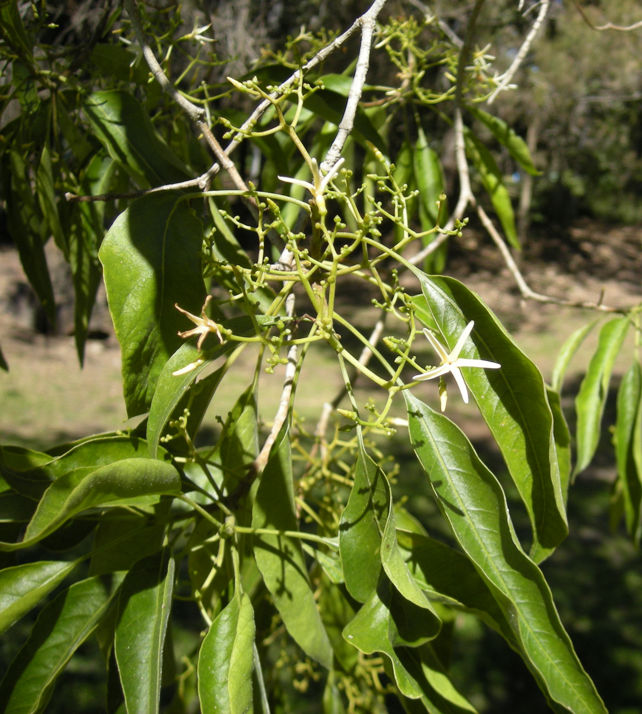

📑 Contents
Alstonia constricta — Bitter Bark (Quinine Bush)

Alstonia constricta — Bitter Bark. Fever reducer, traditional quinine substitute. Image: Wikimedia Commons (CC BY-SA).Common Names
- English: Bitter Bark, Quinine Bush, Fever Bark
- Local: Native Quinine
Identification
- Habitat: Inland and coastal QLD and NSW. Found in open eucalypt forest and woodland. Often on slopes and ridges.
- Leaves: Dark green, glossy, narrow/lance-shaped, 5-15cm long. Prominent veins.
- Flowers: White to cream, small, in clusters. Sweet-scented. Spring to early summer.
- Bark: Corky, pale grey to yellowish-brown. The medicinal part is the bark — intensely bitter taste.
- Fruit: Paired slender follicles, 15-25cm long, containing many small seeds with tufts of hair.
Look-alikes: Other Alstonia species (A. scholaris — Milky Pine, grows in northern rainforests, not a fever remedy). No toxic Australian look-alikes for A. constricta, but the bark of dead trees can be confused with other species. The extreme bitterness is the best identification — no other Australian tree bark is as bitter as Bitter Bark.
Distribution
- QLD: inland and coastal, from Cape York to the NSW border
- NSW: north coast and northern tablelands
- NOT found in: arid central Australia, WA, SA, TAS, VIC south of the Great Dividing Range
Medicinal Uses
- Primary: Fever reducer (antipyretic). Historically used as a quinine substitute for malaria-like illnesses. Contains the alkaloid alstonine.
- Secondary: Anti-inflammatory, mild analgesic.
- Traditional Aboriginal use: Bark decoction for fevers, malaria symptoms, and general illness. Well-documented across QLD and northern NSW.
Preparation
- Decoction: Use a small piece of bark (2-3cm × 5cm, about the size of a thumb). Break into pieces. Simmer in 500mL water for 15-20 minutes. Strain. This produces a dark, intensely bitter liquid.
- Dosage: Start with 50mL (a small cup). Wait 2 hours. If no adverse effects and fever persists, take another 50mL. Maximum 3 doses in 24 hours.
- NOT for prolonged use. This is a short-term fever management tool, not a daily tonic.
Safety
⚠️ Warning
**Use sparingly.** Alstonia constricta contains potent alkaloids. In high doses it can cause vomiting, nausea, and gastrointestinal distress. This is NOT a substitute for antimalarial medication — it is an emergency fever reducer when no other options exist.
- Contraindications: Do not use in pregnancy. Do not use in children under 12. Do not use if already vomiting (dehydration risk from additional vomiting).
- Side effects: The extreme bitterness may cause gagging or vomiting even at therapeutic doses. Vomiting after taking Bitter Bark is NOT a sign of poisoning — it is a common response to the taste. Start with a very small amount to test tolerance.
- Interactions: No known drug interactions, but not studied in combination with modern pharmaceuticals.
- Toxicity: In high doses (more than 3 cups in 24 hours), causes severe vomiting and dehydration. The vomiting itself can be dangerous in a remote area where water is limited. The therapeutic window is narrow — more is NOT better.
Cultivation
- Propagation: Seeds (difficult — require fresh seed and specific conditions). Not practical for emergency cultivation.
- Growing conditions: Warm temperate to subtropical. Well-drained soil. Full sun.
- Harvest: Bark can be harvested year-round. Take small sections from living trees — do not ringbark. The best bark is from mature trees (trunk diameter 10cm+). Dry the bark in shade, store in a sealed container. Dried bark retains potency for 1-2 years.
References
- Lassak, E.V. & McCarthy, T. (2011). Australian Medicinal Plants. New Holland.
- Cribb, A.B. & Cribb, J.W. (1981). Wild Medicine in Australia. Collins.
- Traditional Aboriginal knowledge — documented in multiple ethnobotanical sources across QLD and NSW.
See Also
- Outback Bush Medicine — Australian native plants usable in remote areas
- Safety in Natural Medicine — Plant identification and safety principles
- Natural Medicine by Ailment — Find plants by condition